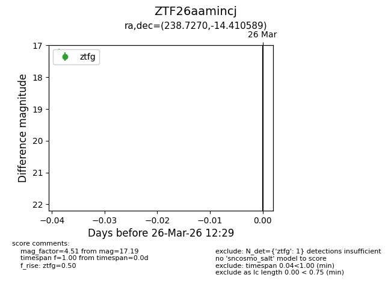
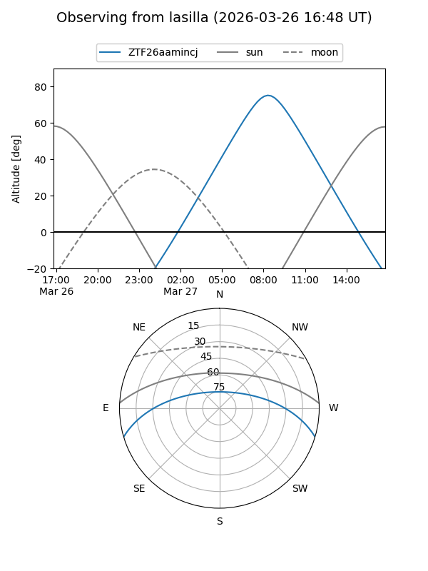
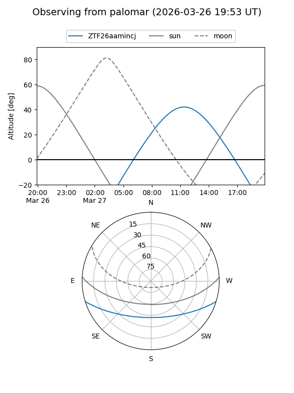

ZTF26aamincj
Target ZTF26aamincj at 2026-03-26 12:31
Aliases and brokers:
FINK: link
Lasair: link
ALeRCE: link
alt names
ZTF26aamincj (ztf,fink_ztf)
Coordinates:
equatorial (ra, dec) = 238.7270,-14.41059
equatorial (HMS+DMS) = 15:54:54.47,-14:24:38.12
galactic (l, b) = (355.6607,+29.12643)
Flags:
Photometry:
last ztfg=17.19
1 ztfg detections
Lightcurve

Visibility


Additional plots